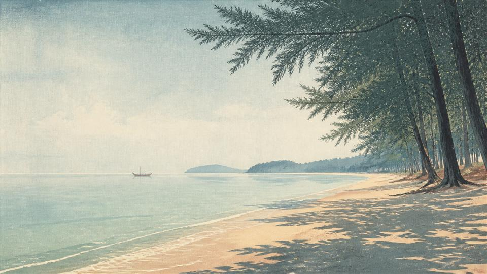

PHUKET · 07.88° N
Which coast keeps your days together?
- 6 island bases
- Stay · eat · beach
- Traffic + walk friction
FIELD EDITIONS · 01—02THAILAND · INDEPENDENT
Choose the city pattern or coast first. Driftwise then connects dated public evidence to the transport, heat, noise and last-kilometre friction that actually shapes a trip.
PHUKET · 07.88° N
BANGKOK · 13.75° N
Original editorial visual · not a hotel photograph
07.88° N98.39° EPHUKET · THAILAND
Most hotel searches start with rooms. Driftwise starts one decision earlier—matching your days, nights and tolerance for island friction to the coast that makes sense.
Good for first stays, couples and families who want a usable beach with restaurants nearby. The trade-off is hilly walking and west-coast traffic.
THE WRONG-COAST TEST
Our difference is simple: we do not begin with a “best hotels” list. We first remove the locations most likely to waste your time, disturb your sleep or make the trip harder than it needs to be.
Choose the right side. Name the compromise. Only then compare the rooms.
Run the free testHills, indirect entrances and heat can matter more than the number beside the pin.
CHECK · ROUTE · SHADE · SLOPEWe surface repeated themes such as noise, room size and location friction beside the benefit.
READ · PATTERN · NOT HYPEValue is judged against the days you actually plan—not against a room in isolation.
COMPARE · WHOLE TRIP · NOT ROOMTHE ANDAMAN FIELD ATLAS
Tap a numbered area, then switch between one hotel sample, one food sample and the beach fit. Every public rating stays attached to its platform and 31 August 2026 evidence date.
Loading detailed island map…
DETAILED MAP · © OpenStreetMap contributors · PINS ARE PLANNING REFERENCES, NOT PROPERTY LOCATIONS
SELECTED AREA · SOUTHWEST COAST
03 / 06A practical first beach base for couples and families who want restaurants nearby without Patong intensity.
Family hotel · beach access
Verified-stay scores are strongest for location, staff and family facilities.
It is lively and family-oriented rather than secluded.
Ratings and review counts change. Links open the current platform page; Driftwise receives no hotel placement fee.
SIX BASES, TWELVE PUBLIC SIGNALS
These are editorial starting points, not rankings. Food and hotel scores remain separate because a rating from one platform should never be blended with another.

Short airport transfer and a slower beach rhythm beside Sirinat National Park.
Keep nightlife, shopping and restaurants close—while choosing the room position carefully.
A usable beach and nearby dining without Patong’s full intensity.
More breathing room and a long west-coast beach, with less density than Patong.
A scenic bay and quiet evenings for travellers who can accept longer transfers.
Trade daily beach access for walkable food, architecture and stronger city-room value.
All six area visuals are original AI-created editorial artwork. They show atmosphere, not a specific hotel, restaurant or documentary condition.
PHUKET DECISION FILE · PREVIEW AVAILABLE
The preview shows our fields, one sample decision and the evidence date. The full reading view adds named hotels, beach proximity, repeated review patterns, watch-outs, currency conversion and practical ways to reduce wasted transport.
No hotel pays for placement. We do not book rooms or promise live prices.
THAILAND, REIMAGINED
The visual archive now moves from Phuket’s Andaman light to Bangkok’s river, rail and old-town mornings—original 16:9 artwork for travel decks, moodboards and digital stories.
Browse the available scenic image library Editorial illustrations are clearly labelled and never presented as hotel photography. Shop previews remain watermarked; purchased files are delivered clean under the listed licence.


EDITORIAL SAFETY
We summarize themes that recur across verified stays. Individual guest wording, photographs and hotel descriptions are not republished.
Scores, counts, fares and exchange rates are dated and linked. Readers are told to confirm the final conditions before booking.
Noise, hills, room size, distance or location friction appears beside the benefit. That keeps the guide independent and easier to trust.